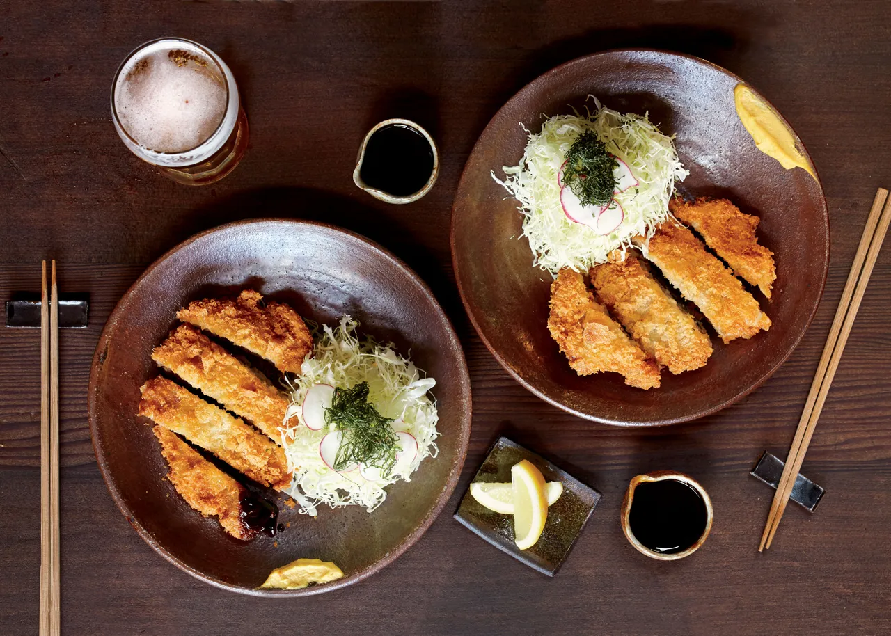

Tonkatsu

Description
Tonkatsu is a japanese fried pork cutlet dish
similar to schnitzel. It is frequently paired
with shredded cabbage and a bbq-like sauce.
Ingredients
- pork cutlet
- panko bread crumbs
- flour
- eggs
- neutral oil
- cabbage
- Bulldog tonkatsu sauce
- salt
- pepepr
Steps
- Flatten pork cutlet by covering in
plastic wrap and bash with the bottom
of a pot.
- Evenly coat pork cutlet in flour, then egg
mixture, then panko bread crumbs.
- Heat neutral oil in large pot to 180° and
fry pork cutlet for 4-5 minutes or until an
internal temp of 145° is reached.
- Slice cabbage into small shreds
- Slice pork cutlet and drizzle with
tonkatsu sauce